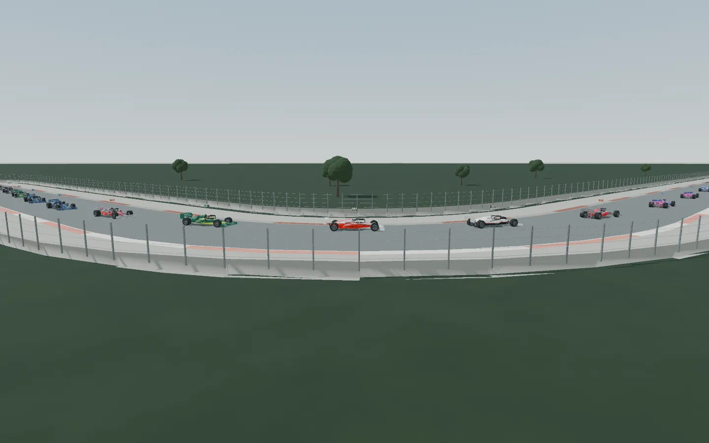
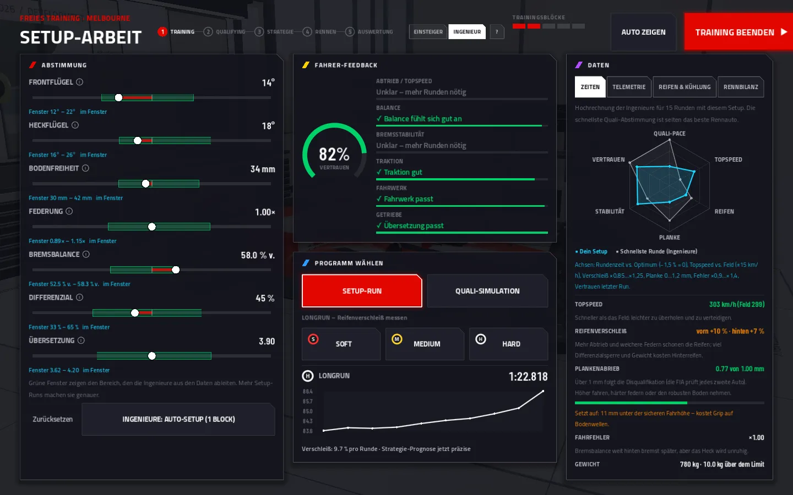
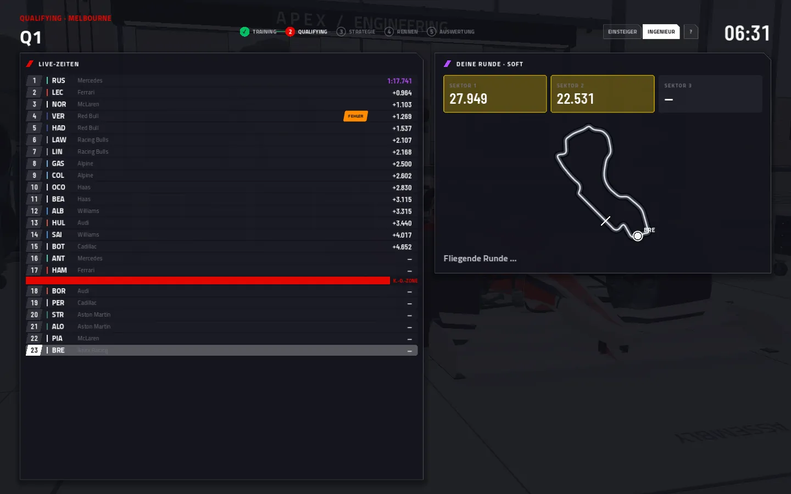
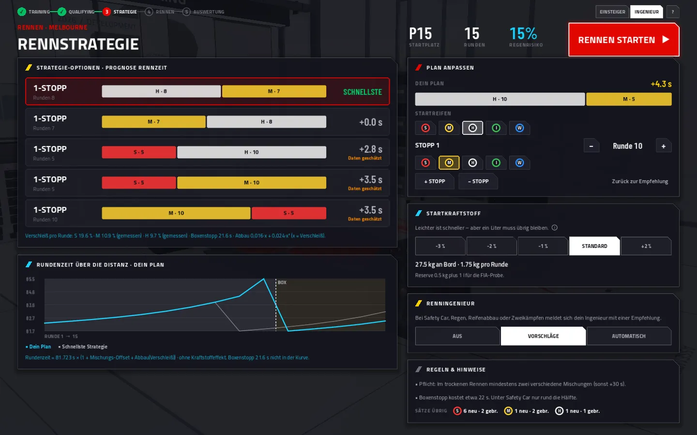
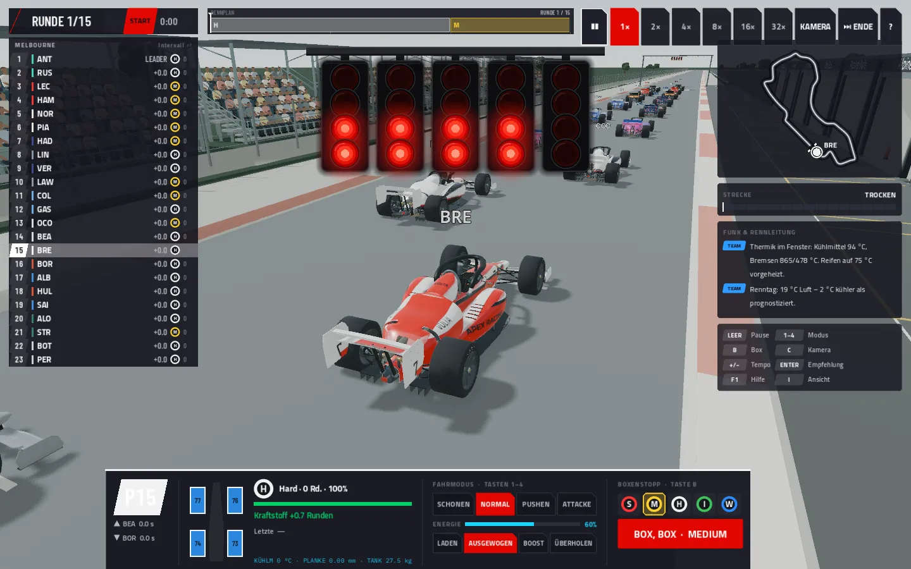
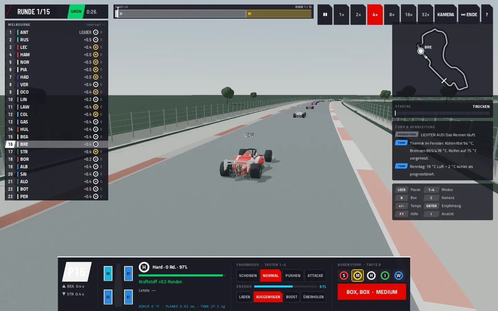
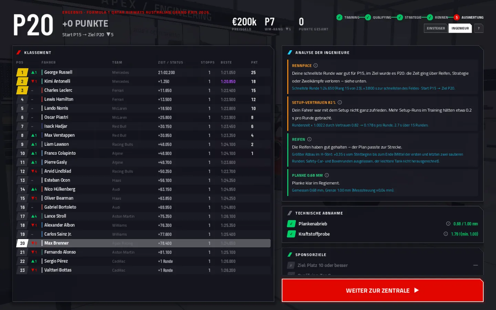

Freitag Setup. Samstag Risiko. Sonntag 58 Runden.
Ein Wochenende hat fünf Abschnitte. In jedem triffst du andere Entscheidungen, und jede wirkt in den nächsten hinein: Ein schlechtes Setup kostet im Qualifying, ein riskantes Qualifying verbraucht Reifen, die im Rennen fehlen.
Sieben Regler, ein Fenster
Jede Strecke hat für jeden Regler einen Bereich, in dem das Auto funktioniert. Am Anfang kennen die Ingenieure ihn nur grob. Nach jedem Run meldet der Fahrer, was ihn stört, und das grüne Fenster wird enger.
Fünf Trainingsblöcke stehen zur Verfügung. Ein Setup-Run schärft das Fenster, eine Qualifying-Simulation zeigt die Rundenzeit, ein Longrun misst den Reifenabbau. Wer nur auf eine Runde abstimmt, erfährt am Sonntag, wie schnell die Reifen nachlassen.

| Regler | Bereich | In die eine Richtung | Der Preis dafür |
|---|---|---|---|
| Frontflügel | 5–30° | Mehr Last vorn, das Auto lenkt williger ein | Widerstand, unruhigeres Heck |
| Heckflügel | 7–32° | Abtrieb und Stabilität an der Hinterachse | Topspeed, Widerstand wächst progressiv |
| Bodenfreiheit | −16 bis +22 mm | Tiefer: mehr Abtrieb vom Unterboden | Aufsetzen auf Wellen, Plankenabrieb |
| Federung | 0,70–1,30× | Härter: stabile Plattform, weniger Plankenabrieb | Mechanischer Grip, mehr Reifenverschleiß |
| Bremsbalance | 46–66 % vorn | Weiter hinten: kürzerer Bremsweg bis zum Optimum | Hinterachse blockiert, mehr Fahrfehler |
| Differenzial | 15–85 % | Mehr Sperre: Traktion bis zum Optimum der Strecke | Verschleiß an den Hinterreifen |
| Übersetzung | ±0,6 | Kürzer: Beschleunigung aus langsamen Kurven | Endgeschwindigkeit auf der Geraden |
Die Bodenfreiheit wird relativ zum Grundwert der Strecke eingestellt.

Wie viel Risiko für eine Runde?
Q1, Q2 und Q3 im K.-o.-System. Du wählst Mischung, Zahl der Versuche und Risiko. Eine gestrichene Runde wegen Track Limits ist im Spiel genauso ärgerlich wie in echt.
| Risiko | Zeit | Gestrichen |
|---|---|---|
| Sicher | +0,15 % | 2 % |
| Normal | ±0 | 5 % |
| Am Limit | −0,28 % ± 0,24 | 13 % |
„Am Limit“ streut stark. Manchmal bringt es eine halbe Sekunde, manchmal nichts.
Wann an die Box?
Ein Rennen über 58 Runden mit einem Stopp. Im Trockenen sind zwei Mischungen Pflicht. Der Stopp kostet rund 21,6 Sekunden. Je älter ein Reifen ist, desto schneller baut er ab, ab 82 % Verschleiß bricht die Rundenzeit ein. Probier es aus:
Schnellste Kombination in diesem Modell: M → H, Stopp in Runde 25. Gestrichelt dargestellt. Die Formeln sind dieselben wie im Spiel, ohne Verkehr, Safety Car und Spritlast.
Im Spiel rechnet die Strategieabteilung mit
- dem Reifenabbau aus deinen Longruns im Training
- der Spritmenge: Leichter ist schneller, aber am Ziel muss ein Liter für die FIA-Probe übrig sein
- der Wahrscheinlichkeit eines Safety Cars auf dieser Strecke
- Regen, wenn die Vorhersage ihn meldet

Fünf Lichter, dann gehört das Rennen dem Kommandostand
Die Ampel arbeitet wie in der Formel 1: Im Sekundentakt gehen fünf Paare roter Lichter an, dann wartet sie zufällig zwischen 0,2 und 3 Sekunden. Wenn alle ausgehen, läuft das Rennen.

Vier Fahrmodi
| Modus | Rundenzeit | Reifen | Sprit | Fehlerrisiko |
|---|---|---|---|---|
| Schonen | +0,6 % | ×0,70 | ×0,93 | ×0,6 |
| Normal | ±0 | ×1,00 | ×1,00 | ×1,0 |
| Pushen | −0,5 % | ×1,32 | ×1,05 | ×1,5 |
| Attacke | −0,9 % | ×1,75 | ×1,10 | ×2,3 |
Dazu kommt 2026 der Energiemodus: laden, ausgewogen, Boost oder Überholen. Das Ladefenster beträgt 4 MJ pro Runde.
Unter Safety Car kostet ein Stopp nur etwa die Hälfte. Der Renningenieur meldet sich mit einer Empfehlung. Du kannst ihn auch ganz abschalten oder entscheiden lassen.
Die Strecke trocknet oder wird nasser, Runde für Runde. Intermediates zu früh kosten auf dem Trockenen, zu spät im Nassen.
Im Windschatten steigt die Kühlmitteltemperatur. Ab 115 °C nimmt der Motor Leistung zurück. Dann hilft nur Abstand oder ein schonenderer Modus.

Der Ton kommt aus dem Fahrzeugmodell
Die Motorengeräusche werden im Spiel synthetisiert, nicht abgespielt. V6-Turbo, V8, V10 und V12 klingen nach Zylinderzahl und Drehzahl. Die vier nächsten Autos hörst du mit Dopplereffekt vorbeifahren. Schaltvorgänge, Begrenzer und Turbo folgen dem, was das Fahrzeugmodell gerade rechnet.
Drei Kameras
TV-Regie mit Schnitten zwischen Streckenkameras, eine Verfolgerkamera und Onboard. Das Rennen läuft in Echtzeit oder bis zu 32-fach beschleunigt.
Was hat es gekostet, was hat es gebracht?
Nach dem Rennen vergleichen die Ingenieure deine Rennpace mit dem Startplatz, zeigen den Reifenabbau je Stint und rechnen aus, wie viel das Setup pro Runde gekostet hat.
Danach folgt die technische Abnahme. Bei mehr als 1,0 mm Plankenabrieb oder weniger als einem Liter Sprit im Tank wirst du disqualifiziert, egal auf welchem Platz du ins Ziel gekommen bist.
- Planke über 1,0 mm
- Weniger als 1 l Sprit für die Probe
- Flexibler Frontflügel fällt beim Biegetest durch

Dasselbe Wochenende, vier Epochen
1990 gibt es kein Nachtanken und keine Energie, 2004 musst du nachtanken. Die Regeln ändern, was eine gute Entscheidung ist.